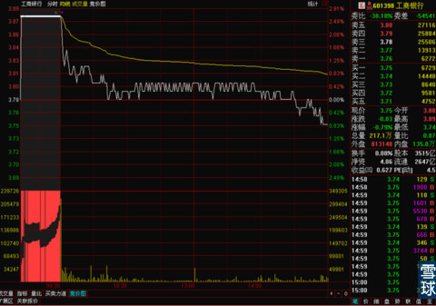
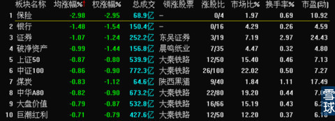
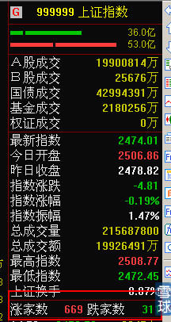
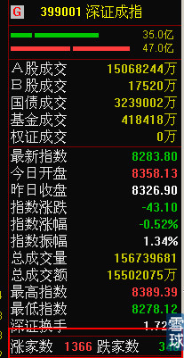
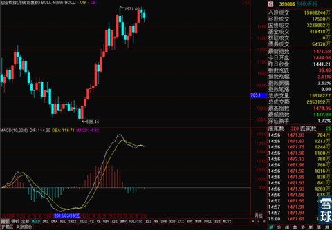

我估计今天大多数小伙伴看完今天的行情都有点懵懵的，这是怎么了？为什么沪港通开闸了，上证指数还绿了腻？为什么和沪港通完全不搭边的创业板来劲了腻？难道资金没有从香港流向上海？但是晚上一看最后的统计结果，
新浪财经讯 11月17日消息，沪港通今日开通，外资净买入A股的资金远超内资买入港股金额。截止港股收盘，港股通每日额度105亿人民币还剩87.32亿，只用了16.8%(注：港股交易可t+0，A股是t+1)。沪股通每日额度130亿则早在13:59已耗尽。照此推算，净买入A股资金是净买港股的7.35倍。
居然是这样的！这怎么有点对不上腻？
其实答案很简单，我昨天晚上熬夜了，今天上午勉强爬起来看了一下开盘，开盘居然直接天量创新高，我就直接爬回去接着睡了。因为关键就在这个开盘价上，我们都知道开盘之前有集合竞价，股价当天的开盘价就是集合竞价的结果。
最有代表性的就是工商银行，

看到那个集合竞价的效果和开盘时候那根巨高的成交量了么。这就是答案，外来资金大都在早盘集合竞价的时候就把子弹打得差不多了，所以之后只能是一路走低。
但是别看我们因为沪港通而最关注的银行和券商板块，它们是极少数下跌板块。

绝大多数股票在今天都是上涨的，


尤其是创业板的股票今天涨的尤其的好，但是我依然坚持我原来的判断，创业板暂时不要碰。
今天状态不太好，先不写了，明天好好给大家讲一个分析过程和结果。
总之，现在上证指数正好停在15分钟BOLL中轨上，30分钟线和60分钟线的K线组合和MACD都不利于进一步上涨，很可能继续上演这样的戏码，连续几天高开低走。小股票活跃出现一点挣钱效应，一旦普通投资者坐不住了，对沪港通之后的蓝筹行情一失望，调仓换股的话，这边马上2/8行情再翻回来。所以只要不是超短线高手，最近不要轻易加仓创业板和小市值股票。创业板是月线级别顶背离，最多能在最后的狂欢里跑个中短线，中线都没法做，所以请谨慎。同时在给蓝筹多一点信心。

 |
我估计今天大多数小伙伴看完今天的SaiLv 2014-11-17 22:10:24 |
Copyright © 1996-2014 SINA Corporation All Rights Reserved.